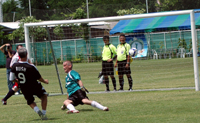

"THANK YOU & GOODNIGHT!"
Legends, Roppongi, Friday, June 26th
Everybody knows that a TML season is never truly finished until we've all congregated at Legends stuffed ourselves with burgers, drowned ourselves in Heineken and listened to the drivel that's spouted from the gobs of those who've won awards.
Well done to the three champions of their respective divisions (pictured here): YCAC 1st X1 for getting their hands on the prize for the first time, FC International for winning their division & being promoted two years on the spin (a first in TML - guess what there'll be aiming for this season in TML Div. 1 (teams be warned!!)) and El Diego a new team that no one really knows anything about except that they killed the 3rd Division and may, according to many, top the 2nd this season.

In the FJ Cup competition it was Hibs who came out tops, although no doubt their sights were set on the main prize - any silverware is better than none though (ask BFC). Big thanks to referee Quentin who has been with TML since its inception and has worked tirelessly on and off the field (yes the adjudicating, arbitration and mediating continues long after you've been sent off - although next season TML will be clamping right down on violent conduct and abusive behaviour towards referees - don't say we didn't warn you). We wish 'Q' and his family every success as they venture back to Canada (I think...). Click here to see what some of our victorious captains had to say about, well.. stuff... more ...
FJ
As One League Ends, Another Begins.
 |
|
Pablo Pomares shoots as BFC crush Panthers 6-0 in the opening match.
|
YC&AC, Sunday, June 21st
Even before the final game of TML season 6 was played, the new Magnificent 7's Summer League kicked off in style, as BFC took a flying start.
Maritizio were left lying at the foot of Division 2 as a resurgent JETRO FC completed their season in style with a 6-0 victory, edging their way into 3rd place. This rescheduled match concluded a very thrilling season for the Division 2 teams, who right up to the end only had a few points separating the promotion places from relegation spots.
Just before this final game, the all new M7's league kicked off with BFC & Shane playing against Panthers & Zion. A very quick and skillfully BFC made easy work of both their oppositions, taking advantage of the small pitches with large goals, scoring a total of 13 goals. more ...
FJ
A Swiss Kicks the Kickers out of Div 1
YC&AC, Saturday, June 20th
Saturday night in YCAC was the ground for a clash that if ended in a draw would see France relegated, and a win for either Lions or Swiss Kickers would see the other drop into Div 2.
Until the night before, Lions were having the luxury of having the full strength squad for only the second time this season, with over 20 players lining up for 16 positions. However, due to the unforeseen circumstances of Friday night, Lions were down to about 17 players, but still at full strength. more ...
HS
|  |
|
Ian Rush scores the only goal as the All-stars knock Footy Japan out of the Bangkok 7's in the semi-finals. MORE
|
It's Over, Lets Hit the Bar!
YC&AC, Sunday, June 7th
Vags ended a rather mediocre season in terms of league position and results but a good one regarding the consolidation and development of the team’s core. A small squad turned out for the final game of the season at 7:30 on a Sunday night, just when the over 40’s amongst us are thinking about horlicks and a bath. On the other hand the conditions were great and it turned out to be a good contest....... more ...
RS
Sala Draw Sums up BFC's Season
Fukuda Denshi, Saturday, June 6th
Yes, yes, yes. It was a soft penalty. But BFC had hit the post four times and deserved at least point from their final game of the season against Sala. more ...
AH
Sala n BFC Share Spoils - Penalty Furore!!
Fukuda Denshi, Saturday, June 6th
What would football be without controversy?? Probably NOT the best sport in the world ever. However, what would football be with some controversy but no diving?? Definitely, the best sport in the world ever....... more ...
ST
 |
|
Joe Takeda enjoys the easy control that playing on grass gives you at SCC 7's.
|
TML Champs Dethroned in Singapore, Look to Defend their Title in Japan
Singapore Cricket Club, Weekend, May 23rd/24th
Fresh from their TML title victory, YC&AC flew to Singapore to play in the Singapore Cricket Club Soccer 6's Tournament on May 23rd to have a go against some of the most notorious opponents in the Asian football scene. more ...
JT
It's Over, Lets Hit the Bar!
YC&AC, Sunday, June 7th
Vags ended a rather mediocre season in terms of league position and results but a good one regarding the consolidation and development of the team’s core. A small squad turned out for the final game of the season at 7:30 on a Sunday night, just when the over 40’s amongst us are thinking about horlicks and a bath. On the other hand the conditions were great and it turned out to be a good contest....... more ...
RS
Sala Draw Sums up BFC's Season
Fukuda Denshi, Saturday, June 6th
Yes, yes, yes. It was a soft penalty. But BFC had hit the post four times and deserved at least point from their final game of the season against Sala. more ...
AH
Sala n BFC Share Spoils - Penalty Furore!!
Fukuda Denshi, Saturday, June 6th
What would football be without controversy?? Probably NOT the best sport in the world ever. However, what would football be with some controversy but no diving?? Definitely, the best sport in the world ever....... more ...
ST
Embassy Crush Geckoes
(Yes, you did read that right!)
Hodogaya koen, Saturday, June 6th
Going into this game against the fourth-placed Geckoes, the British Embassy sat like a dead weight at the foot of the table – a mere three points, and without a win all season, you’d have forgiven them for not turning up at all. They did, however, unlike the referee who had lost his wallet, and the game began with Satoshi making the calls, not that he had much to do, as the game was played out with few contentious moments. more ...
RH
|